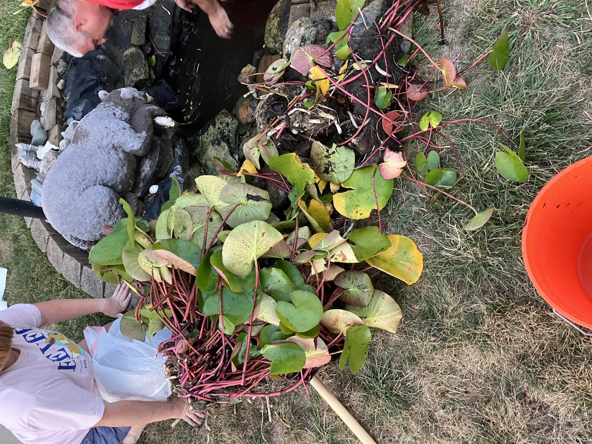

After a gruelling 2 hour tournament Fairmont Highschool's Pickleball Club won. Led by student founder Luke Franklin, they became the winners of the first ever officially regulated and organized high school pickleball tournament. What does this mean??? This means they can enjoy the unofficial title of WORLD CHAMPIONS.
Baileigh is a dog belonging to the greyhound family. She has recently turned 7 yeras old. This birthdays marks 4 years of retirement as well as 4 years with her family, The Franklins.!
The Franklin Family's pond of 10 years has been overrun by lily pads!!! All of the goldfish are in danger, and the pads have over grown the pond and must be dealt with. If action is not taken soon the pond will be unsaveable and in need of a giant makeover and new fish.
